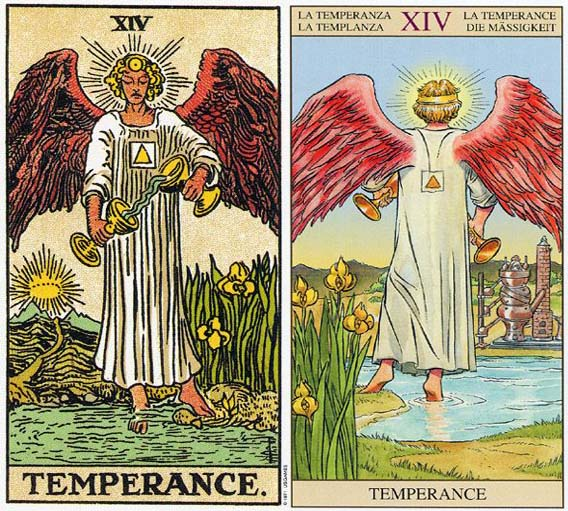

塔罗牌节制（Temperance）解释
相关语：净化 对应星象：山羊座
节制 TEMPERANCE 代表旅行，教学，行动及感情的融合，带来内心的平静感觉。也代表平行，包括现实与潜意识的融合，感性与理性的调和。逆位的节制代表过度沉迷欲望，金钱物质，缺乏目标
在女教皇牌上，被布幔遮掩住的那池水，在节制牌中已清晰可见。一名天使一脚站在水中，另一脚站在陆地，双手各握一个杯，把水在两个杯子之间倒来倒去。有一条道路通往远方日落之处。天使的头部有一个明显的光环或能量区域。在塔心脏的气轮或能量中心，有一个白色的四方形，中间一个橘色的三角形。融合自己的精神和动物层面，是节制牌所意味的。四方形（土）中的橘色三角形（火），代表精神自有形的身体中升起。
节制意味着结合自发性及知识的能力，运用精神的知识及理解力来调节行为的能力。它是指知道每种状况来临时，应该采取什么适当的反映或行为。这是占星学当中射手座所学习的部分课题。
射手座的另一项课题就是在我们动物性与神性的鸿沟之间，搭起一座桥梁。射手座通常拥有一种于生俱来的感觉，即生命是有意义的，而事实上我们是有神性的。他们能够理解，所有的事情都有其目的，而且都能够提供我们成长的机会。
在节制这张牌，你所想象的可能性，和人类与生俱来的限制之间，可能有着极大的差距。要搭起这鸿沟之间的桥梁，可能需要相当多的奉献、热情及训练。而且你还要对你的道路及目的，有明确的认识。因此这张牌上面的道路是通往山上日落处（或是通往你的目标）。射手座的人通常需要有个目标，或一个长期的目的，因为如果没有这些，他们可能会变得毫无节制，一心想满足人类的动物本性，而忽略了神圣的那一面。其他代表射手座地牌还有权杖骑士，而较不明显的，则有其他权杖的宫廷牌。
节制（Temperance）牌面解释
牌面描述的是天使双手拿着两只圣杯，它们分别代表“物质”和“精神”，她在不停地用圣杯相互倒水，试图使两只圣杯的水保持平衡。它告诫我们当面对各种各样的诱惑时，控制好自己的 欲望是最重要的。它不象其它牌一样有着快乐和成功，让我们感到种平淡的美，毕竟平淡的生活才是真正的幸福。
它还代表人的能力是由掌握的知识与对知识的理解共同组成的，做任何事情都要有目的，通过这些事情让我们成熟，事业得到发展。
节制（Temperance）正位解释
单纯、调整、平顺、互惠互利、好感转为爱意、纯爱、深爱
当牌面正立时，你在事业上小心翼翼，因为处事理智让你的同事感到十分放心。目前你们的感情简简单单，一切都是这么的单纯、平静，正是因为彼此的沟通才让这段感情之路如此通畅。
节制（Temperance）逆位解释
消耗、下降、疲劳、损失、不安、不融洽、爱情的配合度不佳
当牌面倒立时，在事业上，你陷入了朝令夕改的怪圈，不妨效仿一下愚人勇往直前，或许能够取得更大的成功。感情上彼此虽然还在不断尝试着沟通，但每次之后总是感觉没有收获，正因为如此你们之间的距离才会越拉越大。
大体上的意义
节制牌代表旅行、教学，或某个射手座的人。也代表平行，包括现实与潜意识的融合，感性与理性的调和。逆位的节制代表过度沉迷欲望，金钱物质，缺乏目标
倒立的节制
当节制牌倒立时，它可能暗示学习而非教学。而旅行也是有可能的。不过， 更常见的情形则是，高层次的自我，和低层次的自我之间产生分裂，因而导致毫无节制的行为。这张牌倒立可能是在暗示，你不愿意倾听你那具有神性的自我，或是你并不向去哺育或滋养它。当你过度耽溺于你人的欲望时，这种情况就会发生。我们可以在一些文化或社会观中看到，金钱或有形的物质，其价值竟高于心灵层面。从历史报告中判断，在濒临毁灭之前，古罗马帝国必定是个节制牌倒立的例子。
节制牌倒立代表没有目的的行为，这包括没有目的的流行。或许在你着手进行任何行动之前，你应该重新认识你的目的。这张牌也意味对于在某种状况内该怎么办缺乏了解，或是从一个极端走向另外一个极端。它可以形容一个人为了得到满足感而不断寻找目标，而结果却只有失望，以及继续地设定下一个目标。
现在你应该重返死亡牌，容许更多的改变发生，或是让更多的事物远离你的生活，如此你才能看得更远或更清楚。
两性关系上的意义
节制牌暗示一个会发生重大成长与学习的两性关系。强烈的目的感，是每位伴侣都能以忠实于自己的方式行事，因为它们连接了潜意识（那一池水）以及真实或有形的世界（陆地）。
它可能象征着和两性关系有关的旅游，或是一个卷进两性关系中的射手座的人。它也暗示着在一个两性关系内，激情和灵性的和谐融合。